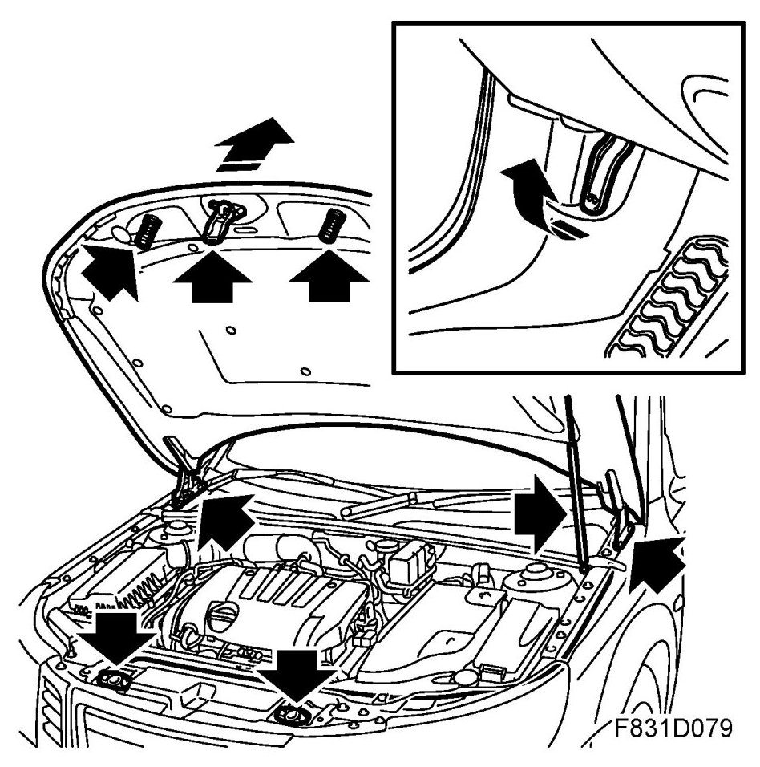
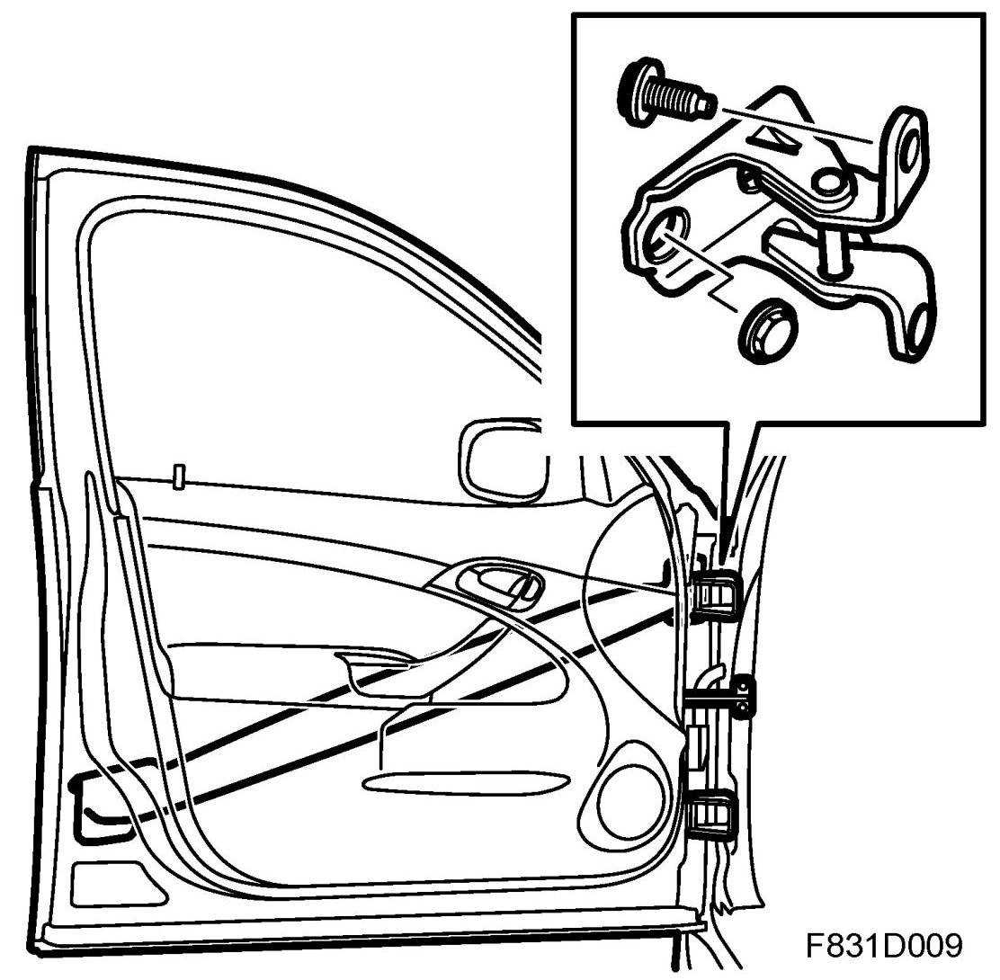
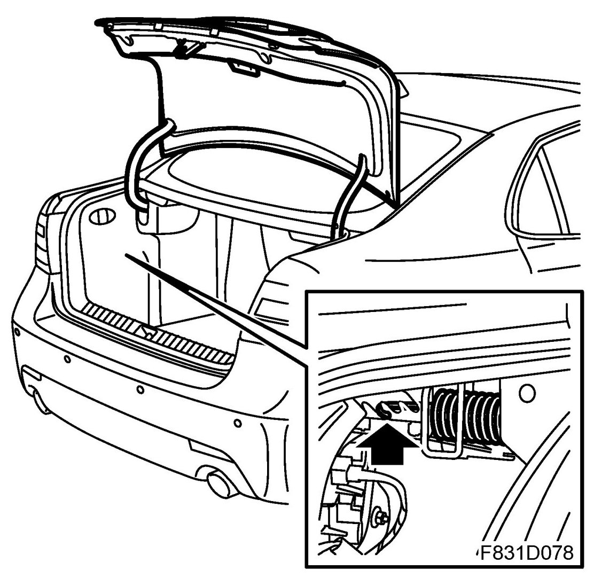
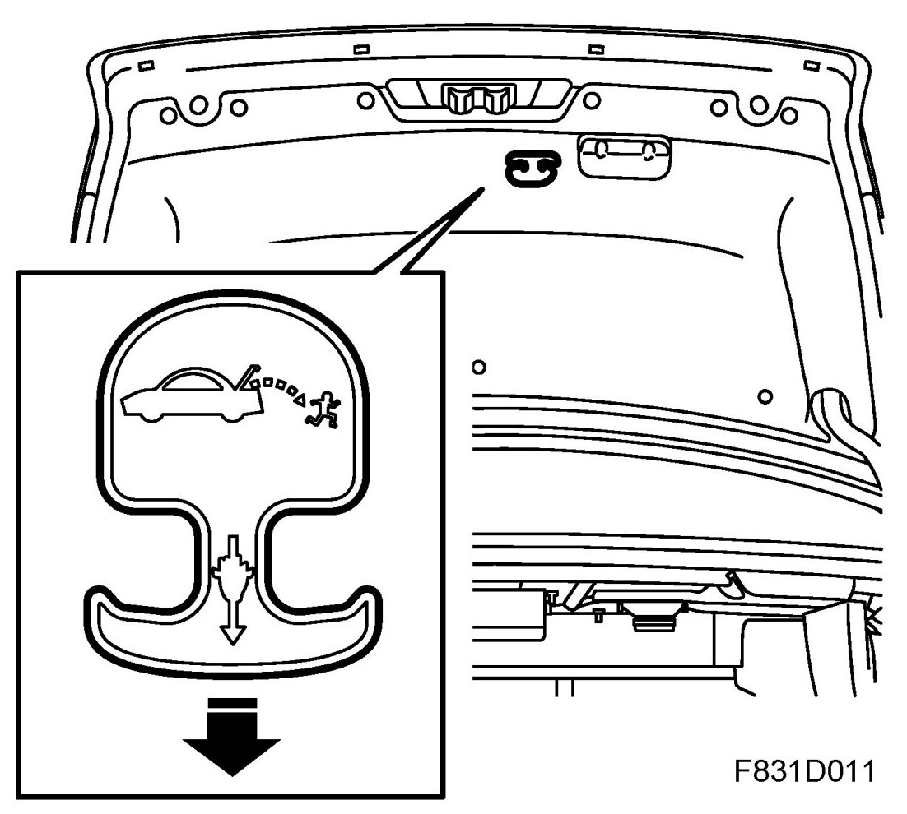
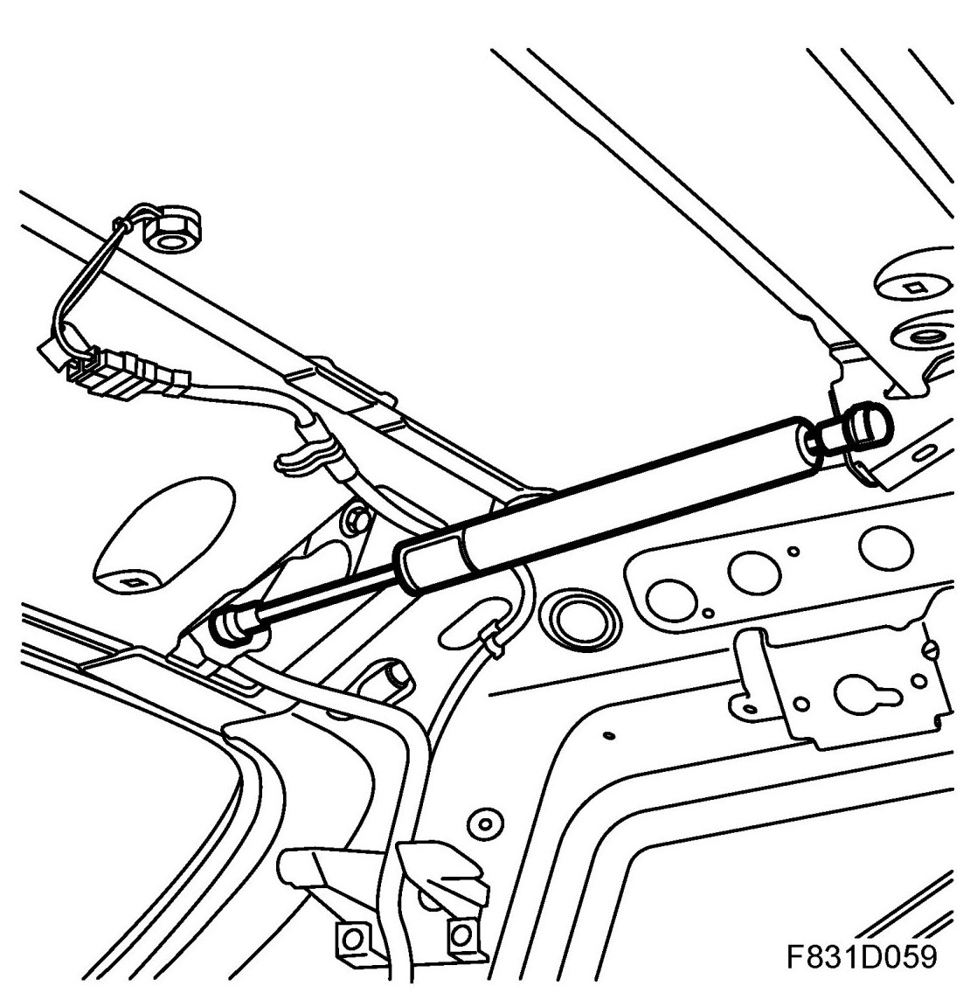
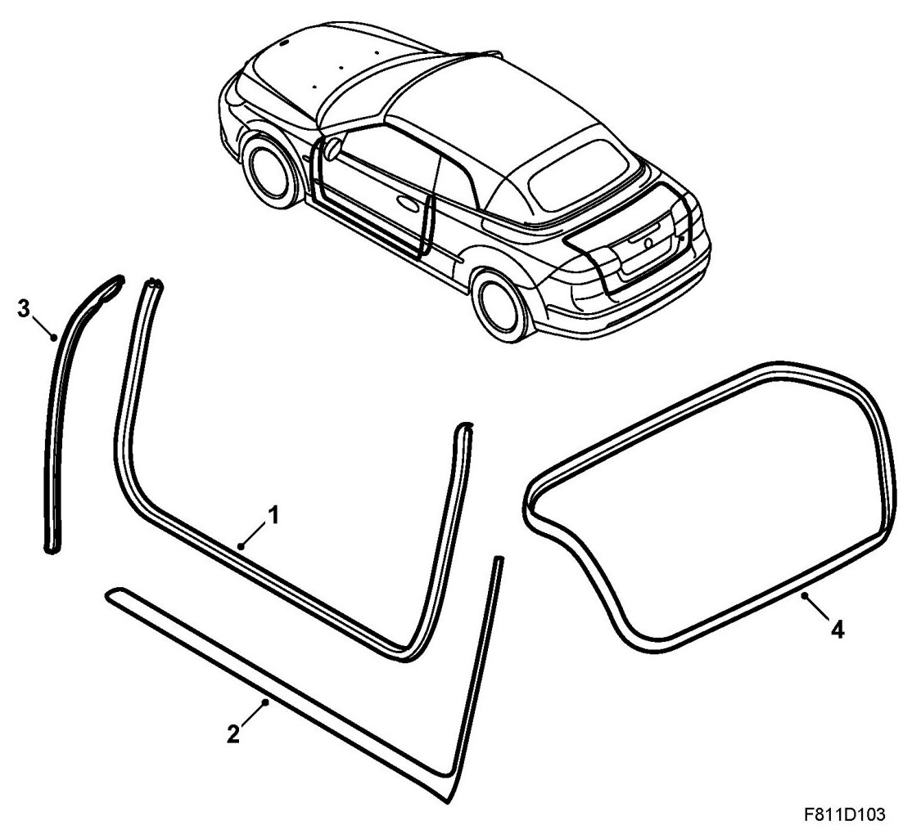

Doors, Hood and Trunk: Description and Operation
Bonnet, Doors, Hatches, Detailed Description
Bonnet

The bonnet is manufactured in aluminium. Note that special primer must be used for painting aluminium, see the respective supplier.
The bonnet lock mechanism comprises two spring locks located in the radiator member that lock on spring-loaded locking pins on the bonnet when it is closed.
The front of the bonnet lifts up when the lock is released. The bonnet is opened by releasing a catch located in the middle of the bonnet.
The bonnet lock is operated by a wire from the control located on the left of the cabin under the dashboard on LHD cars and on the right on RHD.
The bonnet is equipped with a gas lifting spring that holds it open. The gas spring is located on the left-hand side of the front wing with anchor points on ball studs in the body and bonnet.
The single, lubrication-free hinges are secured to the body and bonnet so that there is adjustment allowance forwards, backwards and sideways.
Doors

The impact member in the door is made of HSS. The hinge mountings are screwed to the door and body and the hinge joints on the front and rear doors are lubrication free. The doors are adjustable.
The door stops on the front and rear doors are screwed to the body and the door. They are manufactured in plastic and are lubrication free.
Boot lid

4D
The boot lid hinges are screwed to the body and the boot lid and can be adjusted forwards, backwards and sideways. The boot lid has two mechanical springs located on both sides of the luggage compartment aperture and fastened to the body. The springs can be adjusted depending on the weight of the boot lid, e.g. if a spoiler is fitted, by moving the fastening hook of the spring.
The boot lid is opened by pressing the boot lid opening button on the remote control or with the switch located in the driver's door (certain markets). There is a microswitch on the boot lid opening handle that must be held in to open the lid. The microswitch delivers a brief signal to the REC control module and the boot lid will open.
US/CA:In case somebody gets trapped in the luggage compartment, there is a luminescent handle inside the boot lid. This handle can be pulled down towards the floor to release the lock cylinder so that the boot lid can be opened from inside.

Tailgate
The tailgate has two gas cartridge lifting springs. The gas cartridges are located on both sides of the tailgate aperture between the roof and the headlining. The gas cartridges are mounted on ball studs in the hinge and roof. If the gas cartridge comes loose, e.g. in a collision, the front mountings are protected to prevent the gas cartridge from falling down or being thrown forward into the car.

Seals for doors and boot lid, CV

1. Door opening seal
2. Sill seal and door seal, rear edge
3. Door seal, front edge
4. Luggage compartment seal
The door opening seal (1) forms a seal between the door and the A-pillar, sill and B-pillar. The seal is fastened to a metal flange.
The rear edges of the sill seal and door seal (2) form a seal between the lower edge of the door and the sill as well as the rear edge of the door and the B-pillar. The seal is fastened to the sill trim flange and to seven clips on the B-pillar.
The front edge of the door seal (3) forms a seal between the front edge of the door and the wing. The seal is fastened to the door's metal flange.
The seal between the boot lid and the luggage compartment (4) is fastened around the luggage compartment opening on the metal flange.